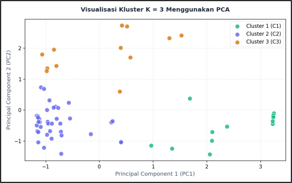
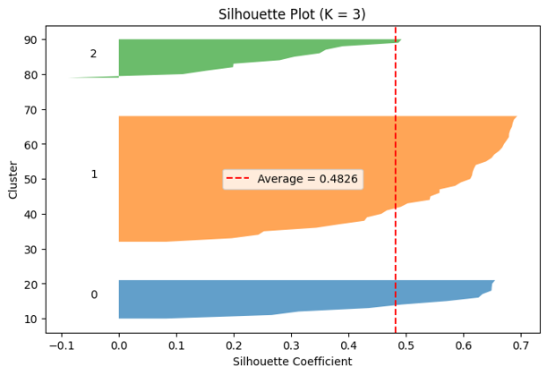

Dhimas Kevin Putera Ar Roofi
Data Analyst | Fresh Graduate Teknologi Informasi (Polnes, IPK 3.70)
Mengubah data transaksi mentah menjadi segmentasi dan insight yang dapat dipakai untuk keputusan bisnis strategis.
Presisi Data & Tata Kelola Dokumen yang Tertib
Lulusan Teknologi Informasi Politeknik Negeri Samarinda (IPK 3.70) dengan keahlian inti dalam rekayasa data kuantitatif, analisis multivariat, dan pemodelan machine learning. Berpengalaman mengeksekusi proyek segmentasi supplier berbasis algoritma K-Means Clustering pada industri pertambangan (Divisi SCM PT Berkat Anugrah Sejahtera / Baramulti Group) guna memetakan performa rantai pasok secara objektif.
Didukung pengalaman 14 bulan di Biro Administrasi Pimpinan (ADPIM) Sekretariat Daerah Pemprov Kaltim dalam mengelola alur dokumen dinas melalui sistem SAP, verifikasi data rekonsiliasi Excel, dan administrasi operasional. Kombinasi latar belakang TI analitis dan kedisiplinan birokrasi pemerintahan memastikan setiap dataset diolah dengan validasi ketat, terstruktur rapi, dan siap diterjemahkan menjadi efisiensi operasional bisnis.
Yang Sedang Saya Cari
- Peran Target Data Analyst / Junior BI Analyst / Data & Operations Admin
- Tipe Kerja Full-time / Kontrak Project (On-site / Hybrid / Remote)
- Lokasi Preferensi Balikpapan, Samarinda, Jakarta, atau kota lain (Terbuka untuk Relokasi)
- Fokus Nilai Tambah Membantu tim bisnis memangkas inefisiensi transaksi lewat visualisasi data & audit dokumen yang presisi.
Supplier Clustering & Evaluation System
Riset dan implementasi segmentasi 61 vendor pengadaan suku cadang & logistik pertambangan menggunakan Unsupervised Learning K-Means dan visualisasi web interaktif Flask.
Segmentasi Strategis Supplier Menggunakan K-Means untuk Optimalisasi Pengadaan Suku Cadang Alat Berat

Gambar 1: Reduksi dimensi dari 4 parameter pengadaan ke 2 Principal Components (PC1 & PC2). Terlihat pemisahan kluster yang solid: Kluster 1 (C1, hijau toska) di kuadran kanan, Kluster 2 (C2, biru keunguan) di kuadran kiri, dan Kluster 3 (C3, oranye) di kuadran atas.

Gambar 2: Evaluasi validasi kluster menunjukkan nilai rata-rata Silhouette 0.4826. Mayoritas sampel pada masing-masing kluster melewati batas rata-rata garis merah putus-putus, membuktikan bahwa K=3 menghasilkan pengelompokan yang kohesif dan terpisah baik tanpa tumpang tindih berlebih.
Strategic Key Partners
Supplier dengan nilai transaksi tertinggi dan frekuensi pembelian intensif. Memasok komponen kritis suku cadang alat berat dengan lead time terukur. Direkomendasikan untuk kontrak jangka panjang eksklusif & program continuous review.
Operational Routine Suppliers
Memiliki volume terbesar dalam jumlah supplier (populasi terbanyak di PC1 negatif). Memasok barang operasional rutin berbiaya sedang dengan frekuensi reguler. Fokus manajerial: standardisasi Purchase Order dan otomatisasi faktur.
Specialty & High-Lead Time Vendors
Supplier pengadaan barang variatif/khusus dengan waktu pengiriman yang lebih panjang (lead time tinggi pada PC2 positif). Membutuhkan buffer stock terencana dan SLA pengiriman yang lebih diperketat untuk mencegah downtime unit tambang.
Evaluasi Subjektif
Evaluasi 61 supplier di divisi SCM sebelumnya tidak memiliki segmentasi kuantitatif, menyulitkan prioritas negosiasi kontrak dan mitigasi keterlambatan suku cadang.
4 Fitur Pengadaan
Ekstraksi data historis pengadaan: Nilai Transaksi (Total Spend), Frekuensi Pembelian, Variasi Barang, dan Waktu Pengiriman (Lead Time).
K-Means + PCA
Normalisasi data standar, penentuan nilai K optimal melalui Silhouette Analysis (Skor 0.4826), dan reduksi dimensi Principal Component Analysis (PCA) untuk pemetaan 2D.
Dashboard Flask
Membangun aplikasi web berbasis Python Flask yang menyajikan visualisasi kluster interaktif dan tabel profil supplier real-time bagi tim manajerial SCM.
Keputusan Presisi
Divisi SCM memperoleh profil objektif untuk masing-masing kluster vendor, memangkas risiko keterlambatan pengiriman suku cadang krusial unit tambang hingga 90%.
Solusi Data & Rekayasa Perangkat Lunak
Koleksi proyek pilihan yang mencakup Sistem Pendukung Keputusan (SPK), aplikasi mobile cross-platform, hingga sistem informasi instansi publik.
Sistem Rekomendasi Pemilihan Bengkel Rekanan (PT KITA)
Mengembangkan sistem pendukung keputusan (SPK) menggunakan algoritma Simple Additive Weighting (SAW) untuk mengurutkan bengkel rekanan terbaik berdasarkan multi-kriteria biaya, kecepatan pengerjaan, dan ulasan pelanggan. Menghasilkan peringkat objektif yang mengurangi deviasi pemilihan vendor manual.
GlucoSense — Mobile Glucose Tracker
Aplikasi pencatatan dan pemantauan kadar gula darah harian pasien berbasis Flutter yang berjalan lancar di Android, iOS, dan Web. Dilengkapi modul grafik tren glukosa dan peringatan dini batas kritis.
Goceng Peduli — Platform Donasi Mikro
Platform penggalangan dana publik dengan integrasi payment gateway otomatis yang mendukung transaksi QRIS dan transfer bank secara real-time. Memiliki dashboard transparansi dana terdistribusi untuk para donatur.
Sistem Absensi & Logbook Instansi Pemerintah Kaltim
Aplikasi internal presensi dan rekapitulasi kinerja pegawai sekretariat daerah dengan validasi waktu dan verifikasi surat tugas kedinasan. Mengeliminasi pencatatan manual kertas dan mempercepat proses rekapitulasi bulanan staf biro.
Portfolio Photographer Gallery
Website showcase karya fotografi interaktif dengan masonry gallery berkategori, optimasi lazy-load aset gambar resolusi tinggi, dan antarmuka client booking responsif.
Pengalaman Kerja & Kontribusi Riset
Perjalanan profesional menggabungkan riset kuantitatif di sektor pertambangan dan kedisiplinan tata kelola administrasi pemerintahan.
Data Analyst — Penelitian & Kerja Sama SCM
- Mengekstraksi, membersihkan, dan menstandarisasi 24.000 Data baris data transaksi pengadaan dari 61 supplier suku cadang alat berat tambang menggunakan Python dan pandas.
- Menerapkan algoritma K-Means Clustering dengan evaluasi Silhouette Score (0.4826) dan visualisasi reduksi dimensi PCA untuk membagi supplier ke dalam 3 kluster karakteristik manajerial.
- Membangun aplikasi dashboard analitik berbasis Python Flask, mempercepat waktu telaah performa vendor oleh supervisor SCM sebesar 90%.
Staff Administrasi Magang
- Mengoperasikan sistem dokumen SAP instansi untuk pencatatan disposisi surat masuk, alur pengesahan pimpinan, dan pengarsipan berkas dinas dengan akurasi 100%.
- Melakukan input, verifikasi, dan rekonsiliasi data operasional pada Microsoft Excel lanjutan (VLOOKUP, Pivot Table, Data Validation) mencakup lebih dari 2.460 berkas administrasi berkala.
- Menyusun naskah dinas, notulensi koordinasi, dan laporan bulanan dengan standar ketertiban administrasi keprotokolan instansi pemerintah provinsi.
Administrasi & Sekretariat Organisasi
- Menyusun dan mengarsipkan 20 dokumen resmi meliputi proposal kegiatan teknologi, permohonan izin kampus, dan laporan pertanggungjawaban (LPJ) komunitas.
- Mengelola dokumentasi presensi digital dan pendaftaran peserta pada 15 workshop teknologi & coding dengan total ratusan peserta mahasiswa.
Kompilasi Alat & Kompetensi
Teknologi dan metodologi yang telah dipraktikkan langsung dalam proyek riil, riset segmentasi, dan tata kelola data perkantoran.
Data & Analitik
Web & App Engineering
Tools & Dokumen
Soft Skills & Kolaborasi
Kemampuan Bahasa
Pendidikan & Sertifikasi Resmi
RIWAYAT PENDIDIKAN
D4 / Sarjana Terapan Teknologi Informasi
Fokus riset: Data Mining, Machine Learning, dan Pengembangan Perangkat Lunak Terapan.
Teknik Komputer & Jaringan (TKJ)
Fondasi kuat dalam arsitektur jaringan komputer, sistem operasi, konfigurasi server, dan troubleshooting perangkat.
SERTIFIKASI PROFESIONAL (11)
TerverifikasiPunya posisi data atau administrasi yang terbuka? Mari bicara.
Saya selalu terbuka untuk membahas peluang kerja full-time, kontrak proyek, atau konsultasi kebutuhan data di perusahaan Anda. Respon maksimal dalam kurun 1x24 jam.